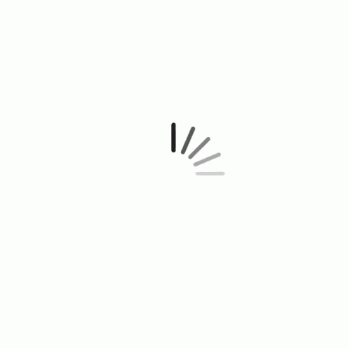
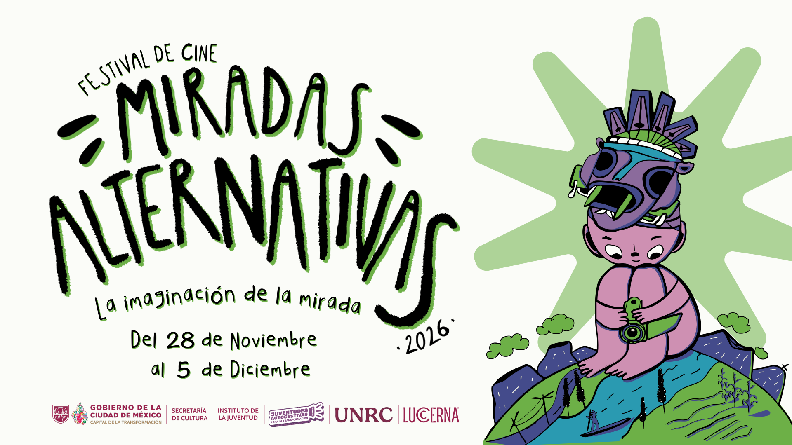

Las imágenes generadas sin gesto humano y social han nacido irremediablemente muertas.
Muertas porque carecen de cuerpo, de una matriz comunitaria que les dé sentido. Deambulan y se reproducen infinitas hasta saturar nuestros nervios ópticos en un flujo desalmado. El cine surgido de los círculos viciosos del capitalismo audiovisual clasifica y embellece, enfoca y consume. Produce lo visible, sí, pero no necesariamente la vida. Esa posición elitista de producción de "lo real" deja fuera y marginaliza a la creación independiente, excluyéndola del foco, sin parte en la representación del presente.
Frente a ello, nosotros: El cine más allá del cine. El epicentro alternativo. Un cine vivo, encarnado y nuestro.
Hay lugares que han aprendido a nombrarse desde el desenfoque. Un desenfoque que es, en realidad, una imagen histórica, política y social. El suroriente de la Ciudad de México es nuestro territorio y nuestro compromiso con el tiempo: porque aquí el pasado habita en el presente y el futuro respira en todas partes. Atravesados por accidentes geográficos que esculpen nuestro paisaje visual de lagos y volcanes, nopales y flores de basalto, habitamos el escenario de nuestras propias historias. Estamos cruzados por el encuentro entre la memoria viva y las promesas de un "progreso" que no termina de llegar.
Basta cerrar los ojos para mirar: imagina un vagón partido, una densa bruma de gas acercándose[...]
EL CINE EXISTE EN EL PRESENTE. Está en las prácticas cotidianas de compartir nuestra experiencia con las imágenes, de nombrar nuestras geografías y de reaprender junto a nuestras compañeras, compañeros y amigxs. Ahí es donde brota la vida. Es aquí, desde nuestro suroriente, en las entrañas de Tláhuac, Xochimilco e Iztapalapa, donde hilvanamos posibilidades, damos vida a las pantallas y tejemos la imaginación de la mirada para ampliar el gesto, el abrazo comunitario del cine.
Porque la soberanía audiovisual es nuestro poder de contar "desde adentro", de ser dueños y tlacuilos de nuestra propia imagen. El futuro es nuestro acto creativo; nuestra mirada alternativa.
El Festival de Cine Miradas Alternativas Mx convoca a realizadoras y realizadores comunitarios, independientes, nacionales y extranjeros a inscribir sus obras cinematográficas para su quinta edición, la cual se llevará a cabo del 28 de noviembre al 5 de diciembre de 2026 en más de 8 sedes itinerantes, patrimoniales y comunitarias del suroriente de la Ciudad de México.
Libertad creativa sin fronteras: Podrán inscribirse trabajos mexicanos o extranjeros de documental, ficción, animación o cine experimental, sin restricción de duración ni año de producción. En Miradas Alternativas Mx la visión no tiene límites: permitimos que la potencia narrativa dicte el formato.
El suroriente como pantalla y motor de cambio: Se reciben obras de todas las temáticas, valorando con especial énfasis aquellas narrativas que expongan la identidad, representación, luchas, vivencias y memorias de quienes habitan el territorio suroriental de la CDMX (Tláhuac, Xochimilco e Iztapalapa), así como la cultura expandida que abraza al Estado de México y sus periferias. Buscamos películas que no solo reflejen la realidad, sino que inciten a la reflexión y a la acción colectiva.
Innovación técnica y lenguajes disruptivos: Celebramos la exploración desde perspectivas alternativas. Si tu historia rompe esquemas, utiliza técnicas no convencionales o habita las fronteras del lenguaje audiovisual, este es su lugar.
Apropiación audiovisual y la cámara como voz local: Otorgamos un valor prioritario a las obras que evidencien procesos de apropiación comunitaria o que hayan sido realizadas por personas que forman parte activa de las historias que narran. Queremos que la cámara sea una extensión de la voz colectiva y un instrumento de empoderamiento que emplee medios de producción accesibles. Buscamos directores que operen como verdaderos tlacuilos de las miradas alternativas.
Una provocación vital y una propuesta de futuro: Más allá de las etiquetas, invitamos a tu obra a responder: ¿Quiénes somos en este territorio cambiante? ¿Cómo dialoga lo externo con lo propio? Deseamos que tu cine sea parte de la conversación que define la realidad social.
Nuestras categorías no son un canal cercado que limita la visión, sino un mapa vivo y abierto para la exploración audiovisual. Nacen como la síntesis de las profundas narrativas que hemos navegado y cosechado a lo largo de los años en Miradas Alternativas Mx, revelando diversas formas de ver y construir el mundo desde el suroriente de la Ciudad de México. Son senderos que emanan de esta misma convocatoria, manteniendo siempre abierto el flujo para la incorporación de nuevas perspectivas y miradas.
Comité Selección y Jurado: Las obras seleccionadas serán evaluadas por un jurado plural compuesto por agentes culturales, realizadores y gestoras de gran trayectoria en el cine independiente y la exhibición alternativa, garantizando un proceso transparente y comprometido con el territorio.
Circuito de Exhibición 2026: Las películas seleccionadas serán anunciadas de manera personal el 6 de noviembre e integrarán la programación oficial de la 5ta Edición, exhibiéndose de manera presencial en el circuito de sedes (pantallas vivas, plazas comunitarias, zona chinampera y espacios culturales).
Reconocimientos: Se otorgarán reconocimientos oficiales de participación y la obra ganadora será acreedora a un estímulo aportado por los patrocinadores y aliados del festival.
¡Sé parte de las Miradas Alternativas que transforman el suroriente de la CDMX y construyen los futuros que imaginamos!
Proyecto apoyado por Secretaría de Cultura de la Ciudad de México (SECULT CDMX) y el Instituto de la Juventud de la Ciudad de México (INJUVE).